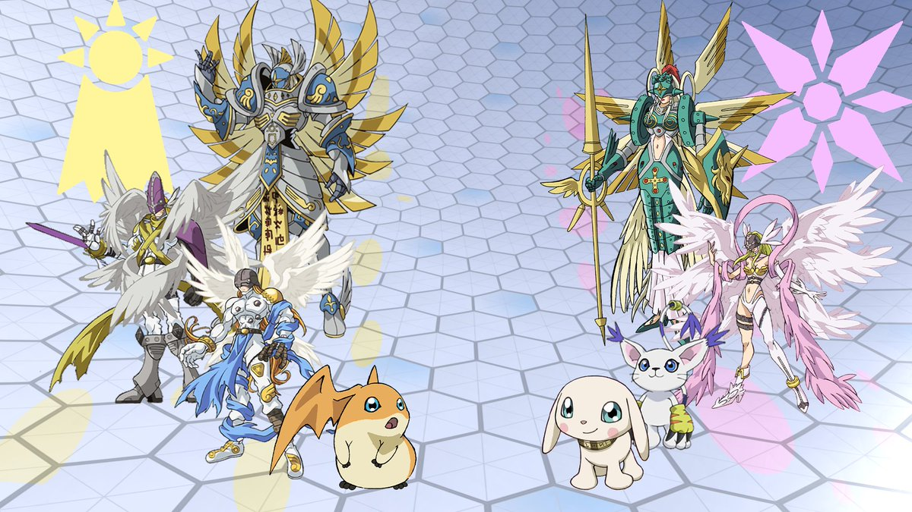

Culumon libera a evolução sagrada. Patamon e Salamon mega evoluem para Seraphimon e Ophanimon e juntos derrotam de vez Argomon. A paz é restaurada no digimundo e você pode voltar para a terra, os portaal para o digimundo continuara aberto para você visitar Patamon. Fim.